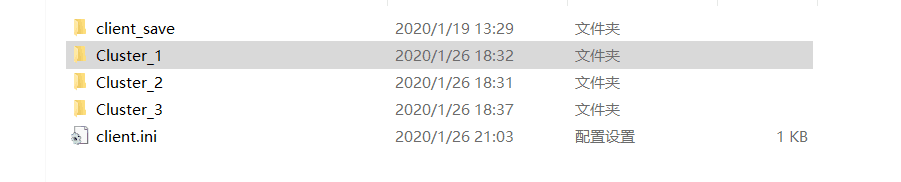
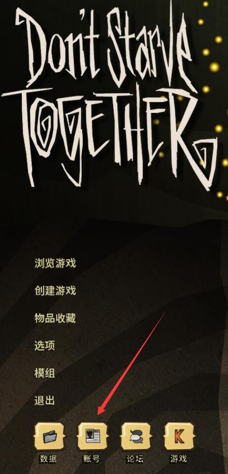
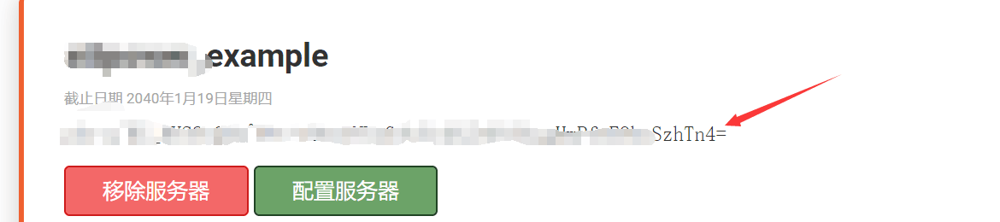
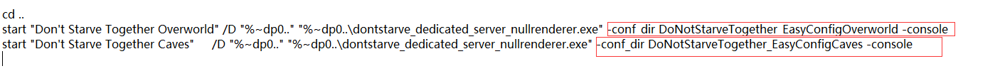

1. 原因
过年闲来无事和朋友打饥荒(Don’t Starve Together Dedicated 以下简称DST)的时候发现异常卡顿，排除掉搭建服务器主机配置的问题，只有可能是网络的问题。引用大神 PaintDream 的回答：
饥荒的联机版使用自制的RPC来完成通信，这个机制基本上就是一层简单的封装，没有针对网络传输做优化。所有的数据包必须由运行在服务器端的模拟器上顺序执行，这大大放大了网络延迟对游戏的影响。
另外，由于模拟器本身优化不足，在地图较大或者MOD较多的时候，服务器可能因CPU单核计算能力不足而卡顿，导致所有客户端都变卡。
和高赞回答：
荒联机版会卡确实主要是这个游戏的问题，其实网速和主机关系不大。
其实题主搭一个独立服务器就不卡了，这个独立服务器不需要跑在一个独立的主机上，只需要在题主的电脑上单独跑一个服务器进程，然后所有人连入世界就可以了。亲测不卡！
我决定搭建一个本地win 服务器，来更好的玩耍。
2. 步骤
(1). 下载软件
- Don’t Starve Together（steam库中的游戏）
- Don’t Starve Together Dedicated Server （steam库中的工具）
(2). 复制mod
- 找到 DST 安装目录和DSTS(Don’t Starve Together Dedicated Server)安装目录，将DST中的mods文件夹中 worksshop 开头的文件夹复制到 DSTS中的mods文件夹。
- 可以右键单机 steam 库中的DST，单机属性->本地文件->浏览本地文件，快速找到安装目录。
(3). 找到存档
-
打开DST，选择创建游戏，选好需要使用的mods，然后选择创建。
-
然后返回，选择数据按钮，选择对应的存档，需要注意的是，他的排序是按照顺序的，即排第一个存档显示的就是第一个Cluster_1。
-
然后选择你的存档，复制到上一个文件夹，并且在该文件夹中新建一个 cluster_token.txt (原本就有的不用新建)
(4). 寻找服务器令牌
-
-
点击游戏界面账号按钮 ,就会有一个界面
 -
点击页面的上方的游戏按钮，
-
点击饥荒联机版的游戏服务器，添加服务器，名称随意。
-
将令牌复制，并保存到步骤(3)中的 cluster_token.txt 中。
-
(5). 启动快捷方式
-
在DSTS文件夹中，打开 /bin/scripts ，复制一份其中的bat文件，然后更改其中的代码。

将红框中的代码改成
1
2-cluster 你的存档名 -shard Master
-cluster 你的存档名 -shard Caves2. 然后打开bat，完成创建服务器。
(6). 开始
打开游戏，浏览游戏，选择你的游戏，加入！
3. 遇到的问题
(1). 联机mod失效
我在server_log.txt 中 ，发现了
1 | [00:00:20]: [Warning] Could not confirm port 10999 is open in the firewall. |
大概率是端口冲突，打开之前复制的存档位置，打开master 文件夹，打开server.ini 文件，更改server_port 的数值即可。